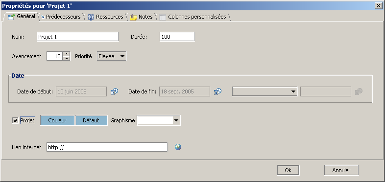
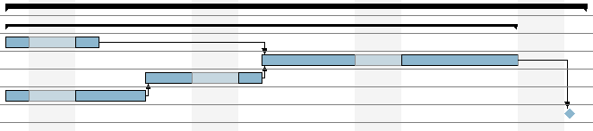

Gestion multi-projet
GanttProject permet de g�rer simultan�ment plusieurs projets.
L'utilisation la plus commune est d'importer succ�ssivement plusieurs projets et d'indiqu� � GanttProject
quels sont les projets :
- importer un nouveau projet (menu Projet, Importer) ;
- accepter l'ajout des t�ches au projet en cours ;
- si les t�ches du projet import� sont toutes sous une m�me t�che m�re, �diter
les propri�t�s de cette t�che :

- cocher la case Projet ;
- valider.
- si les t�ches du projet import� ne sont pas toutes sous une m�me t�che m�re :
- ajouter une t�che ;
- la d�placer juste au dessus la t�che du projet la plus haute dans le tableau
en utilisant le bouton Monter
 ;
;
- indenter toutes les t�ches du projet (sauf la nouvelle t�che) en utilisant
le bouton Indenter
 ;
;
- la nouvelle t�che devient une t�che m�re, il suffit de la d�finir comme Projet, comme expliqu�
plus haut.
Voici un exemple :

Les t�ches qui sont repr�sent�es comme projet ressemblent aux t�ches m�re, mais sont plus �paisses.